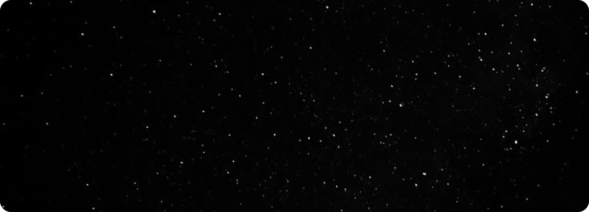

Qualquer um pode
Explorar
Qualquer um pode
explorar o espaço sideral
Explorar
Por que estudar o universo?

Desenvolve o raciocínio científico
Estudar astronomia estimula o pensamento lógico e investigativo,
ajudando a entender fenômenos naturais e a aplicar o método científico.
Amplia a visão sobre o mundo e o universo
Conhecer o universo nos ajuda a entender nosso lugar nele,
desenvolvendo uma consciência global e cósmica sobre a vida e o planeta.

Estimula habilidades multidisciplinares
A astronomia conecta física, matemática, história, tecnologia e
filosofia — promovendo um aprendizado completo e integrado.
filosofia — promovendo um aprendizado completo e integrado.
Vamos decolar juntos nesse foguete
O Sistema Solar é um conjunto formado por oito planetas e outros corpos celestes, que orbitam o Sol, a sua principal estrela. Está localizado na Via Láctea, uma das galáxias que formam o Universo. São planetas do Sistema Solar: Mercúrio, Vênus, Terra, Marte, Júpiter, Saturno, Urano e Netuno.
Decolar